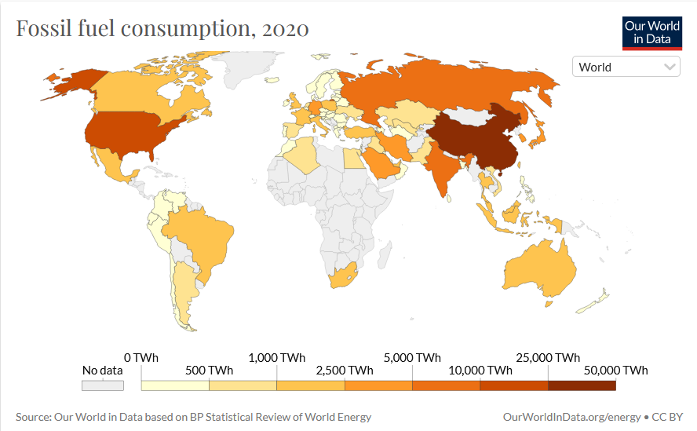

As we keep making most of our energy out of fossil fuels (around 70%) such as coal, oil, and gas, heaps of carbon dioxide will pile up in the air. This causes sunlight that would usually go back out of our atmosphere, to stay trapped inside and heat up the earth causing global warming. Nuclear power aims to fix this problem but it has the chance to be dangerous if used in the wrong way.
The biggest powers in the world are governments and large companies. Some goverments such as Denmark's and the UK's governments are making a true effort while many companies and organizaions are making their commitment to stopping carbon emmisions and using recycled materials. Some examples are Amazon with their commitment to reaching zero net carbon emmisions by 2040 and activley working towards that goal by commiting to power all of their operations with 100% renewable energy by 2025. Another example is Apple who is commiting to be 100 percent carbon neutral for its supply chain and products by 2030 and using around 20% recycled materials in each of their products.
Why we are targeting these goverments and big companies is because they are the ones that have the most power. We buy from these enormous companies because they are the cheapest or best quality on the shelf. Most of the cheap but durable products are plastic for a reason. As we know, plastic does not degrade very well. After thousands of years when the plastic is almost done decomposing, it leaves behind small pieces. This land used to break down plastic and trash polutes the air and takes up land that could be used for things like homes and farmland.
The government are the ones with the power. For example, in 2021 the EU proposed a law that makes all mobile and protable devices to use the open standard of USB-C. Contrary to what many people believe, this would greatly reduce emissions because you would only need to have one cable for your phone, laptop, watch, etc. This means that there is no need for many machines manufacturing large ammounts of different cables for each product to come with. Forget no charging brick in the box, there would be no need for a cable in the box because USB-C would work with everything.
Many teams of engeniers around the world are working to make the dream possible. A team in southern France is working and they are around 50% done on their completed reactor. It is the largest reactor of it's kind and will be operational in around 20 years. Sometime in the future, we will have an energy source with no negatives but for now, we will have to use what we have already made and try to get as far away from the ending supply fossil fuels as we can.